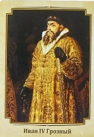

Владимир Святославич

Иван IV Васильевич, прозванный Грозным (25 августа 1530 — 18 (28) марта 1584) — великий князь московский и всея Руси с 1533 года, первый царь всея Руси.
Деятельность. Иван IV Грозный стал первым русским царем, вдвое расширил территорию владений Москвы и правил 50 лет (с 1533 по 1584 год) – дольше, чем любой другой правитель России.